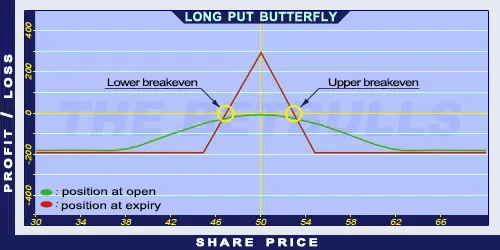

Description and use
Long Put Butterfly is the opposite of Short Put Butterfly strategy. This strategy is popular, even though it is a net debit investment. The popularity is from the attractive risk/profit ratio. To establish the position, the trader needs to have a lower strike Long Put, two middle ATM Short Puts, and higher strike ITM Long Put in the portfolio. The investor can profit from share prices moving within given limits. Despite the attractive risk/profit ratio, the maximum profit is limited. The direction of the market is neutral. The investor speculates on shares with low volatility and small price changes. The expected profit is relatively high, given the low costs. The expiration should be at least three months.
- Type: Neutral
- Transaction type: Debit
- Maximum profit: Limited
- Maximum loss: Limited
- Strategy: Neutral strategy
Opening the Position
Long Put Butterfly Option Positions
- Buy a lower strike (OTM) Put option.
- Sell two middle (ATM) Put options.
- Buy a higher strike (ITM) Put option.
All components must have the same expiration and only Put options are used. The difference between consecutive strike prices must be equal.
Steps
Entry:
- Make sure the share prices are moving within certain limits.
Exit:
- The position can be closed only before expiration.
Basic Characteristics
- Maximum loss: Net debit.
- Maximum profit: Difference of two consecutive strike prices - Net debit.
- Time decay: Time decay has a positive effect on the value when the position is profitable, and a negative effect when the position is lossmaking.
- Lower breakeven point: Lower strike price + Net debit.
- Upper breakeven point: Higher strike price - Net debit.
Advantages and Disadvantages
Advantages:
- It is profitable when the prices are moving within certain limits and the costs are low.
- Low and limited risk.
- Relatively high risk/profit ratio.
Disadvantages:
- Potentially higher profit is only possible close to expiration.
Closing the Position
Buy back the Short Puts and sell the Long Puts.
Mitigation of Losses
Close the position the above-mentioned way.
Example

Long Put Butterfly strategy example with ABCD traded for $50.00 on 17.05.2017. The investor engages in the following:
- Buy a Long Put option with a strike price of $45.00, expiring in June 2017, for a premium of $0.98.
- Sell two Short Put options with a strike price of $50.00, expiring in June 2017, for a premium of $2.91 each.
- Buy another Long Put option with a strike price of $55.00, expiring in June 2017, for a premium of $6.12.
- Net debit: $1.28
- Maximum loss: $1.28
- Maximum profit: $3.72
- Lower breakeven point: $46.28
- Upper breakeven point: $53.72